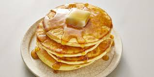

Pancakes

Fluffy Traditional Pancakes with Maple Syrup
Easy and quick to prepare, serve in a traditional way with maple syrup.
Ingredients
- 1 cup all-purpose flour
- 2 tablespoons granulated sugar
- 1 tablespoon baking powder
- 1/2 teaspoon salt
- 1 cup milk
- 1 large egg
- 2 tablespoons unsalted butter, melted
- 1 teaspoon vanilla extract
Optional Add-ins
- 1/2 cup chocolate chips or blueberries
- 1 teaspoon cinnamon
Preparation
-
Mix Dry Ingredients:
In a large bowl, whisk together the flour, sugar, baking powder, and salt.
-
Mix Wet Ingredients:
In another bowl, whisk together the milk, egg, melted butter, and vanilla extract.
-
Combine Mixtures:
Pour the wet ingredients into the dry ingredients and stir until just combined.
Be careful not to overmix. If you’re adding chocolate chips, blueberries, or cinnamon,
gently fold them in now.
-
Preheat Griddle:
Heat a griddle or non-stick skillet over medium heat and lightly grease with butter or oil.
-
Cook Pancakes:
Pour 1/4 cup of batter onto the griddle for each pancake. Cook until bubbles form
on the surface and the edges look set, then flip and cook until golden brown on the other side.
Repeat with remaining batter.
-
Serve:
Serve the pancakes warm with butter, maple syrup, and your favorite toppings.